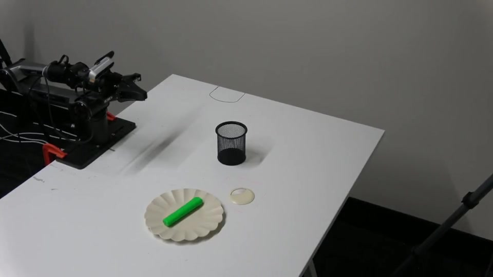
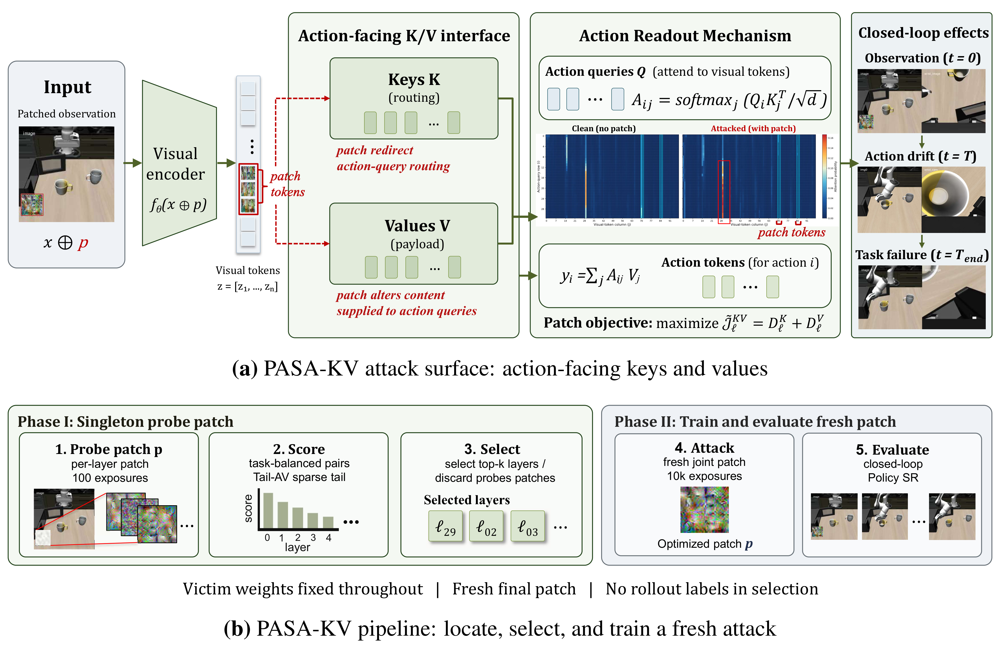
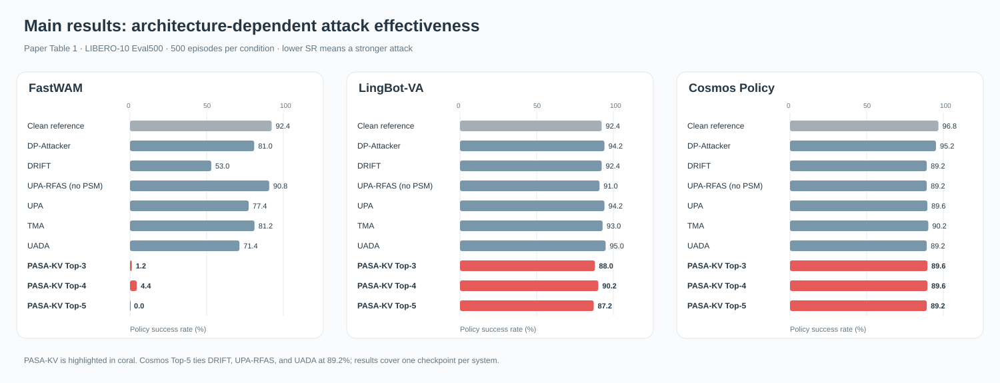
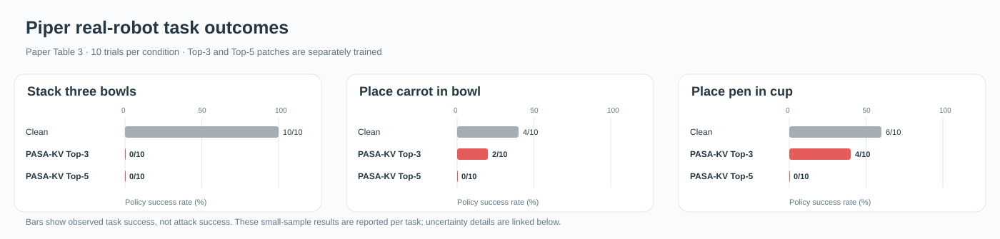

Keys determine where to look
Visual keys influence how action queries route attention over image tokens
PASA-KV is a white box visual patch attack on world action models (WAM): it finds the key/value routes that robot actions read, then trains a small RGB patch against those routes and measures its effect on closed loop control


The attack targets visual K/V routes that feed action-facing readouts; closed-loop task success measures its behavioral effect
Visual keys influence how action queries route attention over image tokens
Visual values carry the content passed to the action-facing readout
Internal displacement and action response are diagnostics; task success measures the final effect
A short search guided by action readouts chooses target layers before training a fresh adversarial patch shared across tasks

Policy success rate is the robot's task success rate. Lower success under attack means a stronger attack
FastWAM policy success across 500 evaluation episodes
Matched conditions; same loss, target count, patch geometry, and training budget

Piper demonstrations from the supplied clean and Top-5 attack recordings. Each clip is pre-rendered at 5× speed
Qualitative pen-in-cup demonstrations. The reported trial outcomes across three tasks appear below
A separately trained Piper FastWAM checkpoint uses one task-shared patch per Top-k condition, overlaid on the head-camera image at each replan

Explore the method, reported results, and robot demonstrations. Reference code will follow